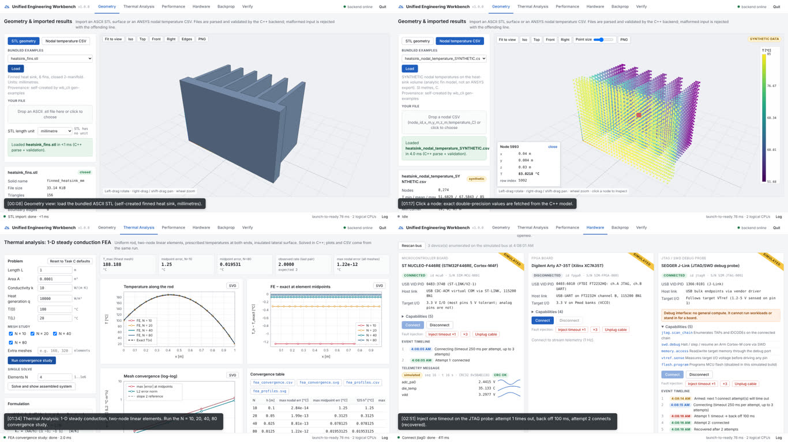

One executable, two layers. Launch.exe is a statically linked C++17 program. It hosts a
loopback-only HTTP server (cpp-httplib) and opens the default browser, which renders the UI from
app/web. Every computation, parser, solver, thread pool and mock adapter lives in the
wb_core static library. wb_core has no HTTP, JSON or UI dependency. It reports progress through
callbacks and stops through a cooperative CancelToken. The same library serves the GUI, the
headless CLI that regenerates results/, and the tests.
Why a local web UI. It gives one portable interface with a mature WebGL renderer (three.js,
used only for drawing) and keeps the brief's rule that all backend logic is C++. Binding to
127.0.0.1 avoids the firewall prompt. The exe imports only DLLs that ship with Windows
(KERNEL32, msvcrt, SHELL32, USER32, WS2_32; checked with objdump).
Responsiveness and safe cancellation. Long work runs in a bounded job executor (2 threads). A job publishes its whole output under a lock only when it succeeds. A cancelled or failed job therefore never exposes a partial mesh or benchmark, and the UI keeps the previous result.
| Decision | Reason |
|---|---|
std::from_chars for all numbers | Locale-independent: strtod in a German locale reads "1.5" as 1 |
| Columns matched by name | Real exports reorder columns; missing or duplicated ones are still errors |
| Thomas solver + dense-Gauss oracle | O(N) for the batch; independent check in tests |
Own [0,1) mapping of mt19937_64 | uniform_real_distribution differs between libstdc++ and MSVC |
| Fixed thread pool, atomic chunk counter | Bounded, reusable, thread creation outside timing |
| Per-worker scratch, index-addressed output | No locks, no allocator contention, input order kept |
| Adapter interface + mocks | Real USB adapters can replace mocks without UI changes |
Folders: src/core (library), src/app (transport, jobs, launcher),
src/cli, src/frontend, tests, third_party (pinned, hashed in
DEPENDENCIES.lock), data, results, docs, vcs. All paths are relative.
There are six views: Geometry, Thermal Analysis, Performance, Hardware, Backprop and Verify. A shared status bar shows the
running job with progress and Cancel, and an expandable log console mirrors logs/workbench.log. Inputs
are validated in the browser for immediate feedback and again in C++ as the authority. Errors appear as cards
with a stable code, the offending line and a fix hint. Measured launch-to-ready (process creation to HTTP listening):
11 ms natively on Linux and 42 ms for the Windows exe under Wine. VS Code/Antigravity start the same exe
through an F5 configuration (needs the C/C++ extension) or an extension-free task.
ASCII STL. A state-machine parser with line tracking. It detects binary STL even when the header
begins with solid, and rejects NaN/Inf/overflow, decimal commas, quads, truncation and trailing data. After
parsing it welds vertices exactly and counts edge uses, which yields closed/open status, boundary and non-manifold edges,
area and divergence-theorem volume. The bundled heat sink reports closed, 156 triangles, 28,800 mm³, which the tests assert.
The viewer offers orbit, pan, zoom, fit-to-view and preset views.
Nodal CSV (node_id,x_m,y_m,z_m,temperature_C). Tolerates BOM, CRLF, quotes and reordered or extra columns.
Rejects missing headers, semicolon exports, non-finite values, bad or duplicate IDs, wrong field counts and
T < −273.15 °C. Warns when the extent suggests millimetres. Nodes render as a viridis point cloud with a °C colour bar.
Clicking a node fetches its exact double-precision values from C++. The example is a self-made SYNTHETIC
field (fin equation), labelled as such in its name, the UI and data/PROVENANCE.md.

Launch.exe (run under Wine for this capture): STL viewer, SYNTHETIC nodal cloud with node inspection, FEA study, and JTAG timeout recovery. 26 timestamped steps and a 4-minute captioned video are in docs/walkthrough/.Tested limits (docs/file_limits.md): 1 M triangles (129 MiB) parse and validate in 1.42 s, and 4 M CSV nodes (163 MiB)
in 0.90 s. Files over 256 MiB or 5 M items are refused with guidance. Empty and header-only files get their own messages.
Formulation. The governing equation is −d/dx(kA dT/dx) = qA on 0 < x < L, with T(0) = 100 °C and T(L) = 20 °C, constant k, A and q, and an insulated lateral surface. The weak form with linear shape functions N₁ = 1 − ξ, N₂ = ξ gives, for each element of length h,
ke = (kA/h)[[1, −1], [−1, 1]], fe = (qAh/2)[1, 1]
These are assembled into a tridiagonal K [W/K] and F [W]. For N = 4: kA/h = 4·10⁻³ W/K and qAh/2 = 0.125 W, both checked in the tests and shown live in the UI. Boundary conditions are imposed by symmetric elimination: the known T₀ and TN move to the right-hand side of the neighbouring rows, and the constrained rows become identities. K stays symmetric, so a Cholesky or CG solver would also accept it. The system is solved with the Thomas algorithm. Units: m, m², W/(m·K), W/m³, °C. The equation is linear in T, so °C and K give identical answers.
Exact solution: T(x) = 100 − 80x/L + (q/2k)·x(L − x), peak 188.2 °C at x = 0.42 m. Errors are evaluated at the element midpoints using the FE interpolant (Ti + Ti+1)/2. Also computed: 64 samples per element and an L2 norm by 4-point Gauss quadrature.
results/fea_profiles.csv.| N | h [m] | max nodal err [°C] | max midpoint err [°C] | L2 err | rate |
|---|---|---|---|---|---|
| 10 | 0.1 | 2.8e-14 | 1.25000000 | 0.9129 | - |
| 20 | 0.05 | 2.0e-13 | 0.31250000 | 0.2282 | 2.0000 |
| 40 | 0.025 | 8.8e-13 | 0.07812500 | 0.05705 | 2.0000 |
| 80 | 0.0125 | 1.2e-12 | 0.01953125 | 0.01426 | 2.0000 |
Raw data: results/fea_convergence.csv. Energy balance (N = 80): R₀ = −0.420 W, RN = −0.580 W,
sum = −qAL = −1.000 W (residual 9·10⁻¹⁵ W). Matches the exact boundary fluxes ∓kA·T′.
R = KT − F is the heat supplied at a node, so both reactions are negative.Assumptions and learning. The model is steady, 1-D and conduction-only. The lateral surface is insulated, so there is no convection term. Properties and q are uniform, and both end temperatures are prescribed. Learning approach, with no prior FEA coursework: derive the weak form, check the element matrices by hand for N = 4 (zero row sums are a quick sanity test, because a uniform temperature produces no heat flow), and test each claim against an analytic oracle rather than against plots. One lesson carries over to ML surrogate work: verify where the error actually lives (midpoints, norms, fluxes), not only where a method happens to be exact.
Workload. 4,000 independent rod solves on 4,000 linear elements each (16 M nodal values). The cases come from
mt19937_64 with seed 20261101, k ~ U[0.5, 400] W/(m·K) and q ~ U[10³, 10⁵] W/m³, and the case count, mesh size and seed are configurable.
Serial and parallel runs execute the identical fused kernel (fea::solve_into, which the tests show is bitwise equal to the reference solver)
on identical cases. Results go to slot i·(N+1), so the output order equals the input order.
Parallel path. A WorkerPool of p std::threads, created once and parked on a condition variable.
parallel_for hands out chunks of ⌈cases/16p⌉ through an atomic counter (dynamic scheduling), and each worker owns its scratch buffers.
The tests prove each index is visited exactly once and that the work runs off the calling thread.
Timing protocol. steady_clock around the solve loop only. Case generation (0.08 ms), thread creation, buffer allocation
and the agreement comparison are excluded. 1 warm-up run (discarded), then 5 measured runs; the median is reported. Worker counts are
capped at the logical CPU count.
| Host A (primary) | Windows 11 (build 26300), AMD Ryzen 7 6800H, 8 physical / 16 logical cores, 31.3 GiB RAM: candidate's laptop, packaged Launch.exe |
|---|---|
| Host B | Linux container, Intel Xeon @ 2.10 GHz, 2 logical CPUs, 7.8 GiB (development machine) |
| Compiler | GCC 13 (MinGW-w64 for Windows, native on Linux), Release -O3 -DNDEBUG, C++17 |
| Launch→ready | 11 ms native Linux; 42–94 ms Windows exe under Wine (reported separately from compute) |
| Host | Variant | p | median [s] | speedup | efficiency | max |ΔT| [°C] |
|---|---|---|---|---|---|---|
| A | serial loop | 1 | 0.1382 | 1.000 | 1.000 | - |
| A | pool | 1 | 0.1387 | 0.996 | 0.996 | 0 |
| A | pool | 2 | 0.0705 | 1.961 | 0.981 | 0 |
| A | pool | 4 | 0.0369 | 3.750 | 0.938 | 0 |
| A | pool | 8 | 0.0192 | 7.213 | 0.902 | 0 |
| B | pool | 2 | 0.0956 | 1.934 | 0.967 | 0 |
Host A raw files: results/windows11_ryzen7_6800h/, two independent runs (p = 1,2,4 gave 1.93×/3.75×; p = 1,2,4,8 is shown above). Host B: results/benchmark* (p = 4 skipped and disclosed: 2 logical CPUs). Agreement: PASS, bitwise identical on both hosts. Before each parallel run the buffer is filled with −1, so a stale result cannot pass.
Honest analysis. (i) The 1-worker pool costs 0.4–3% against the plain loop. That is the hand-off overhead: a std::function call per case,
atomic chunk claims and the condition-variable wake-up/join. (ii) Scaling is near-linear (7.21× on 8 physical cores, 90% efficiency) because the solves are independent,
O(N) and cache-resident (2 × 32 KB scratch per worker), with no locks and no shared writes. (iii) The efficiency loss from 98% (p = 2) to 90% (p = 8) is expected:
the all-core boost clock is lower than the 1–2-core boost on a mobile Ryzen, the 128 MB of results must be written through shared memory bandwidth, and the
end-of-batch tail (chunks of ⌈cases/16p⌉) shortens as p grows. p = 16 would put two threads on each core (SMT) sharing an FPU and was not part of the protocol.
(iv) Measurement bug found and fixed: the first harness allocated a fresh 128 MB result array inside each timed run. Zero-filling and first-touch page faults are
serialised by the OS, which held 2-worker speedup at 1.39–1.71× on Host B (pre-fix CSVs kept in results/dev/). Allocating outside the timer fixed it.
(v) The Windows run also showed that AMD right-pads the CPUID brand string, a trimming bug invisible on the Intel development host, now fixed.
The Performance view repeats the whole protocol on any machine and exports the same three files.
docs/embedded_design.md.| Link | Signals (assumed pinout) | Level / owner |
|---|---|---|
| J-Link → STM32 debug | PA13 SWDIO/TMS, PA14 SWCLK/TCK, PA15 TDI, PB3 SWO/TDO, PB4 nTRST, NRST, VTref, GND | 3.3 V (VTref sensed); J-Link is the only master; on-board ST-LINK isolated (CN2 open) |
| MCU ↔ FPGA SPI | SPI2: PB13 SCK, PB14 MISO, PB15 MOSI, PB12 CS → Pmod JA 1–4 (G13, B11, A11, D12) + GND | 3.3 V both sides, so no level shifter; MCU master. Pmod VCC is never tied to 3V3 (both are sources) |
| FPGA JTAG | FT2232HQ channel A → XC7A35T TAP | On-board FTDI owns this chain; the external probe is not connected to it |
| Host links | ST-LINK VCP (USART2 PA2/PA3), FT2232 ch. B UART (D10/A9), J-Link USB | USB 2.0, 115200 8N1 text frames with sequence number + CRC32 |
SPI2 was chosen over SPI1 because PA5 is also the LD2 LED. Pins come from the public user manuals and the Digilent master XDC, and must be verified against the board revision. Power: each board takes 5 V USB VBUS through a powered hub with a common ground (star point at the hub). There is no E5V or J-Link pin-19 back-feeding. A level shifter (SN74LVC8T245) is used only if a 5 V peripheral is added.
Why a JTAG adapter is not a compute board. A J-Link is a protocol bridge between the host and a target's IEEE 1149.1 Test Access Port
(TCK/TMS/TDI/TDO/nTRST) or Arm SWD. It shifts bits through the target's scan chain to halt or step the core, read memory, or program flash. It runs no
user workloads, and its I/O voltage follows the target's VTref. The three devices also differ in connector (20-pin 0.1″, 10-pin 0.05″ Cortex,
Xilinx 2×7 2 mm), voltage and protocol (JTAG/SWD versus SPI versus UART). Only one master may drive a chain. The software therefore reports
general_compute = false for the probe and never treats boards as interchangeable.
Mocks (C++, clearly SIMULATED). An IDeviceAdapter interface covers discovery (with real VID:PIDs 0483:374B, 0403:6010, 1366:0101), capability
reporting, connect/disconnect and a telemetry message. The message carries device id, sequence number, time, a fields map with units, and a CRC32 over a canonical payload.
DeviceManager keeps a lock per device and runs a state machine (disconnected → connecting → connected → fault). Recoverable failures:
an injected connect timeout is retried up to 3 times with 250 ms timeouts and 100/200 ms exponential backoff, and is shown as recovered. A simulated cable unplug
puts the device in fault, and a reconnect recovers it. Both are covered by unit and HTTP tests and can be triggered from the UI.
Safe plan: inspect jumpers, power one board at a time, check rails with a DMM, confirm VTref, connect SWD, run a UART loopback, and bring up SPI at 1 MHz under a logic analyser before speeding it up.
Model: h = tanh(wx + b), ŷ = vh + c, J = ½(ŷ − y)². With x = 1, y = 2 and w = 0.5, b = 0, v = 1, c = 0 (handwritten in the appendix, reproduced here by the C++ code without autodiff):
| Quantity | Value | Chain rule |
|---|---|---|
| z, h = ŷ | 0.5, 0.46211716 | z = wx + b |
| e = ŷ − y, J | −1.53788284, 1.18254182 | ∂J/∂ŷ = e |
| ∂J/∂c | −1.53788284 | e |
| ∂J/∂v | −0.71068205 | e·h |
| ∂J/∂b | −1.20946448 | e·v·(1 − h²), with 1 − h² = 0.78644773 |
| ∂J/∂w | −1.20946448 | e·v·(1 − h²)·x |
| update, η = 0.1 | w = 0.62094645, b = 0.12094645, v = 1.07106820, c = 0.15378828; J → 0.68577377 | |
Gradient check (central differences, ε = 10⁻⁶): absolute errors 1.1·10⁻¹⁰ (w, b), 5.3·10⁻¹¹ (v) and 1.1·10⁻¹⁰ (c), all
≤ 10⁻⁵ PASS (results/backprop_gradcheck.csv). The update uses all four gradients from the original parameters, applied simultaneously.
Direction. The prediction is below the target (e < 0), so every gradient is negative. Each parameter therefore increases to push ŷ up. c moves most (its gradient is e itself), and w and b are damped by the tanh slope 0.786.
results/backprop_loss.csv.The loss falls monotonically from 1.18 to 0.686 after one step, to 1.0·10⁻² by step 10 and to about 10⁻²⁰ by step 100. The decay is roughly geometric because, near the optimum, J is close to a quadratic in the parameters and a fixed learning rate contracts the error by a constant factor each step. The output bias c alone can absorb any residual (ŷ = vh + c is unbounded), so zero loss is reachable and the network overfits its single sample. That is expected for one data point and says nothing about generalisation.
Tests. 60 doctest cases and about 13.7 k assertions:
Results: 60/60 on GCC 13.3, Clang 18 and the MinGW-w64 Windows binary, with zero compiler warnings at -Wall -Wextra -Wpedantic -Wshadow.
The shipped exe also contains a Verify view with 13 numerical self-checks, and app\bin\wb_tests.exe runs without a build.
Evidence.
results/: raw CSVs plus labelled SVG/PNG plots, regenerated by wb_cli.docs/walkthrough/: timestamped screenshots, server log and a captioned demo video.vcs/: git bundle and log.docs/AI_USE_LOG.md (tools, prompts, checks, AI errors caught) and docs/OWNERSHIP.md.Limitations.
Launch.exe. (2) Verify → Run self-verification (13/13). (3) Thermal → Run convergence study (rate 2.0000). (4) Performance → Run (agreement PASS, plus your machine's speedup).